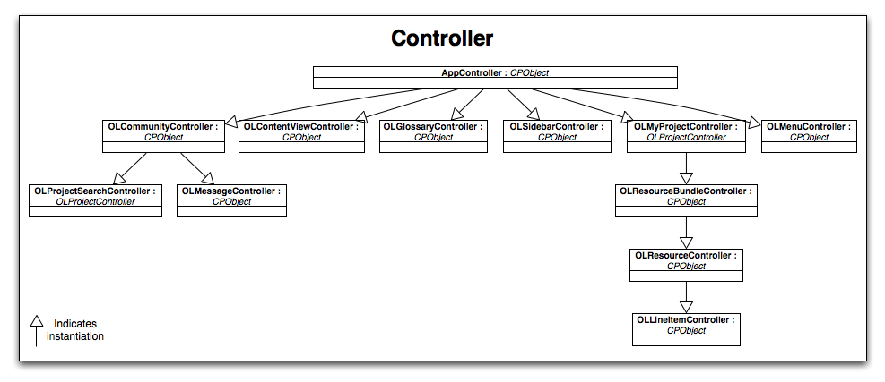

Design Documentation
Many pieces and technologies work together to produce a software application. Localize is no different. This document will describe the high-level design of Localize from three angles: the software, the system, and testing.
The software architecture and design document covers the pieces that make up the user-facing features of Localize. This includes the design of the main client application and the rationale behind this design.
The system architecture and design document details the various components of Localize from a high-level. The main features of this are the client-server interaction and the technologies used on the server.
Finally, the test architecture and design document describes the Localize team’s approach to testing.
This document is a snapshot of the documents located on Localize’s wiki. Please visit http://wiki.github.com/hammerdr/Omni-Software-Localization/design-documentation for the most up-to-date documents.
Organization of This Document
- “Software Architecture and Design” gives an overview of the software technologies.
- “System Architecture and Design” describes the client-server interaction.
- “Test Architecture and Design” highlights the test architecture and strategies.
Software Architecture and Design
This document describes the high level design of the application and the rationale behind this design.
Localize is designed as an overall Model-View-Controller (MVC) system. This design pattern can be seen in the overall application, as well as in smaller subsystems of the system. Wherever possible, the core principles of MVC have been followed. MVC is such a recognized and respected pattern that it is not necessary to delve into the rationale behind this design.
The rest of this document will document the three layers of MVC. First, the model layer will be presented, followed by the controller layer, and finally the view layer will be discussed.
Model Layer
Localize has a well-defined model layer which closely follows the domain of the problem-space. However, because Localize is a web application, some interesting problems needed to be solved by the model layer.
Cocoa has a very nice persistency layer (Core Data) which can automatically handle much of the saving and loading of the data into memory. Cappuccino is still in its infancy and does not have an equivalent yet. Localize did not aim to port Core Data to Cappuccino, but wanted a few of its features. An abstract class, OLActiveRecord, solves most of these problems.
The following diagram gives an overview of the model layer.
OLActiveRecord
OLActiveRecord is an abstract superclass of all Localize’s model objects which need to map directly to a persistent store (more on the persistent store will be discussed in the following sections). OLActiveRecord provides these model objects with some useful behavior:
- Automatic loading and saving to the persistent store
- Archiving and unarchiving of objects
- A dynamic search API that allows all objects to be conveniently searched in the persistent store based on its properties
A nice benefit of OLActiveRecord is that no code outside of this class ever needs to communicate with the persistent store. This provides only a single area of coupling with the persistent store. As the persistent store changes throughout development (as it has many times), OLActiveRecord is the only point in the application that is affected.
Persistent Store (CouchDB)
Unlike a desktop application, a web application does not have access to a local filesystem to which it can write its data (HTML5 may solve this issue, but it is not implemented in all major browsers yet). Therefore, a web application needs to talk to a server somewhere to save and load its data. Localize uses CouchDB, a schema-less document-based JSON store, for this purpose. CouchDB has many advantages and interesting features which have enabled Localize to move quickly and offer unique features, but the discussion of those is outside the scope of this document.
One important thing to know is that the model objects in Localize are mapped to documents in CouchDB. When objects are saved, they are archived (using a custom JSON keyed archiver) and stored in the database as plain JSON. Similarly, when objects are retrieved they are unarchived into Localize. OLActiveRecord provides all this behavior.
Search API
As Localize developed, the need arose for the ability to search the objects stored in the persistent store. This behavior was put into OLActiveRecord in such a way that allowed all model objects which inherit from OLActiveRecord to have their own dynamic search API.
Each model object which inherits from OLActiveRecord has an API specific to that object. This API is created dynamically based on the properties of that object. For example, consider a message object defined as:
@implementation Message : OLActiveRecord
{
CPString subject @accessors;
CPString content @accessors;
CPDate dateSent @accessors;
CPString toUserID @accessors;
CPString fromUserID @accessors;
CPString fromUserEmail;
}
// All initialization methods are left out
@end
OLActiveRecord allows all the properties of this object to be searched in the persistent store using the following API:
+ (void)findBySubject:withCallback:
+ (void)findByContent:withCallback:
+ (void)findByDateSent:withCallback:
+ (void)findByToUserID:withCallback:
+ (void)findByFromUserID:withCallback:
Implementation details and additional information can be found on the wiki.
Controller Layer
The controller layer sits between the view and model layers. Its job is to respond to user input, prepare model data to be displayed in views, and provide the logic that is unique to Localize.
Localize has many controllers, but they can be separated into logical groups which provide similar behavior. The two main kinds of controllers this document will cover are the so-called first-class controllers and the data source controllers.
One controller which does not fit into the above groups is the AppController (often called the AppDelegate in Cocoa). Its job is unique because it initializes the entirety of the application. AppController sits above all other controllers because it is its job to start all these controllers and hook them together appropriately.
The following image gives an overview of Localize’s controller layer.

Data Source Controllers
Localize refers to data source controllers as controllers whose job is solely to prepare data for the view layer and possibly respond to some actions from the view layer which affect data. These controllers are usually very simple and do not do anything outside of these responsibilities. These controllers are usually instantiated by other controllers, and not at the AppController level.
First-Class Controllers
First-class controllers are the main controllers of Localize which implement most of its logic. Often they are instantiated at the highest level (AppController) and may delegate responsibilities to other controllers they instantiate (such as data source controllers). First-class controllers are also called such because they are usually data source controllers for first-class model objects. Because of this, they also usually correspond directly to items in the sidebar.
Examples of first-class controllers include the Sidebar Controller, Menu Controller, Content View Controller, Project Controller, Glossary Controller, and Community Controller.
Sidebar Controller
The Sidebar Controller is the main navigation point for users of Localize. It allows users to navigate between different data items such as projects and glossaries. It is the job of the Sidebar Controller to create the view that displays the navigation items and communicate with other controllers to retrieve the data that should be shown in this view.
Menu Controller
The Menu Controller is navigation point for users of Localize. Its job is to create the items in the menu bar, delegate the enable/disable behavior of the items (Cappuccino does not yet provide automatic validation of items), and delegate the actions of the menu items to the correct controllers.
Content View Controller
The Content View Controller is responsible for controlling the view that is displayed in the main content view of Localize. It responds to a notification that tells it to update its view. It provides all the necessary logic, such as resizing the view, hiding any previous views that were shown, and placing in the new view.
Project Controller, Glossary Controller, and Community Controller
These controllers are the data source controllers for the sidebar. They respond to messages that the Sidebar Controller will ask to get the data to display in the sidebar. Additionally, they are data source controllers for first-class objects such as projects, glossaries, and community items (such as messages).
These controllers provide most of the logic for Localize. Since first-class controllers are more stable than plain data source controllers, most of the application logic is routed through these controllers. They can then delegate this logic to other, more specialized controllers. This decouples other parts of the application (like views and other controllers) from the unstable data source controllers.
View Layer
The view layer in Localize is very uninteresting. Most first-class controllers map directly to a relevant view (such as the Project Controller to the Project View). The controllers are responsible for initializing their own views and telling the Content View Controller when these views should be shown.
Localize uses very well-defined methods of communicating with the view layer. Data is provided to views through a data source mechanism. A view’s actions which need to take effect outside of the view are delegated to its controller. If more than one area of the application needs to know about a user action, the view will send a notification. Using these methods decouples the views from the model layer and from a specific controller.
System Architecture and Design
Localize is a web application and as such has many components that work together to make it work. This document describes these components at a high level and the different interactions between these components.
The following graphic gives an overview of Localize’s system architecture.
(Thick-)Client-Server
Like many web applications, Localize is a client-server application at a high-level. The client is all the Cappuccino (Javascript) code that is downloaded by the user from the server. The server is relatively lightweight and is mostly responsible for serving up the code, acting as the persistent store, and providing other functionality that the client cannot provide (mostly due to browser or security restrictions).
Unlike most web applications, Localize is a thick-client application. This means that most of the business logic resides on the client side. This is a very familiar concept to developers of desktop applications, but those coming from a web development background may be confused. In a thick-client application, the server only provides the bare minimum of functionality. In this way, the server can be fast and efficient and the client can be very rich and interactive.
The rest of this document will go into the detail of the specific components of Localize and how these components interact. For detail about the architecture of the client code, see the Software Architecture and Design document.
Data Storage
The main responsibility of the server is to provide a means of storing data (known as the persistent store). Currently, this is done through CouchDB, a schema-less document-based JSON store. CouchDB is a very convenient choice because by default it provides a RESTful HTTP API, which the client can use to store or retrieve data.
However, CouchDB may not be the right technology for Localize in the future. To decouple the client from the actual data storage technology, a small abstraction layer of PHP sits between the client and CouchDB. It translates URLs from the client into URLs that CouchDB understands. It will also forward the data from the client to CouchDB and the data from CouchDB to the client. Besides just decoupling the client from the server, this PHP layer also could provide a security layer. It could, for example, check the origin of the request and block all requests determined to not be from Localize. Or, similarly, if Localize wished to provide an external API to other application developers, this PHP layer could be used to check the request to be sure it was from a trusted application developer.
The following sections will go into detail the API the PHP layer provides and the translation process between the client and CouchDB.
API
While CouchDB already provides a RESTful HTTP API, this API is pretty specific to CouchDB. Therefore, Localize provides a more generic API through a thin PHP layer between the client and CouchDB.
Client API
The client’s API is designed to match the needs of the client. Currently, Localize needs to retrieve data in three ways:
- All: Retrieve all documents of a particular kind (e.g. retrieve all projects)
- Search: Retrieve all documents of a particular kind which match a certain criteria (e.g. retrieve all projects which are owned by a certain user)
- Individual: Retrieve a specific document, which is known by the client, of a particular kind (e.g. retrieve the project with ID 1234)
The HTTP API which the client uses is fairly straightforward. In the following URLs,
- All: /api/
/find/all - Search: /api/
/find/ [?key=123] - Individual: /api/
/
These URLs are then converted by the PHP layer to the corresponding URLs used by CouchDB. The specifics of this conversion is outside the scope of this document.
Other Functionality
In addition to providing data storage and a convenient API to access this data, the server is also responsible for a few other distinct functions. These functions are usually only provided by the server because they cannot be provided by the client either for security reasons or due to browser limitations.
Uploading
Due to browser restrictions, the client cannot access the user’s filesystem. Therefore, the user must upload their files to a server in order to get them into Localize.
The server parses the files uploaded by the server into a representation that the client can understand and then sends them back to the client. The client can then do whatever it wishes with this data, such as check it for errors or save it to the persistent store.
Downloading
Again, since the client does not have access to the user’s filesystem, the client cannot save data to the user’s computer. The user then must download the file.
The server provides the download service. The client sends the data which should be downloaded by the user. The server parses this data into a file format the user expects and then tells the client about the physical location of this file on the server. The client then directs the user to this URL and the user is able to download the file and save it to the local filesystem as they see fit.
Test Architecture and Design
Testing is a very important part of software development. Early on, the Localize team decided that testing would play a large role in development. A basic test architecture has been developed over time which allows the team to work efficiently and produce a high-quality product.
Localize has four primary modes of testing: development testing, automated testing, acceptance testing, and user feedback. This document will describe these various parts of testing.
Development Testing
The primary goal of development testing is to have all the benefits of testing, but with as little overhead to the developer as possible. Unit tests are the primary form of testing during development. In addition, the Localize team practices test driven development (TDD). The basics of TDD are: write unit tests, make the unit tests pass, and refactor the code to improve it while still passing the tests. Pair programming is also used occasionally to help reduce new bugs that are introduced.
As a bonus, the unit tests created during the development phase also provide a large regression test suite. The development team is encouraged to be continuously running the test suite (perhaps even using an autotest library) so that with each change, the developer instantly knows if she broke anything.
Automated Testing
Testing is a pain, but the benefits of testing are so large that it would be unwise not to test. Therefore, the Localize team has made sure that tests are as automated as possible. The parts of automated testing include development testing in the form of unit tests (see above) and an automatic build and continuous integration server. The build server automatically pulls the latest code with every commit to source control. It then runs all the unit tests to make sure they pass on a production-like machine. Finally, if all the tests pass, the build server will build the application and move it to where it can be used by the team. The team can then do manual acceptance tests of the application on an actual production-like machine (see the next section).
Acceptance Testing
The production-like build and continuous integration server (see above) is also the platform for acceptance testing. During development, the Localize team is encouraged to perform ad-hoc acceptance tests on the server. Also, before each release the team will perform a number of acceptance tests and user stories on the test server. These include common and uncommon user actions, difficult user input (such as very large application bundles), and some basic forms of regression tests. This hopefully will catch any last-minute bugs and is a great way to ensure a high quality release before shipping.
User Feedback
Gathering user feedback has played a large role in the development and direction of Localize. While user feedback may not be a form of testing, it is a way to ensure a high-quality application that users will enjoy using. For this reason, the Localize team created an easy way for users to provide feedback at an early stage. All data that is gathered through this system is considered highly by the team for future releases.
This feedback has been so useful that the team wanted to gather even more information from the field. So an automatic error logger was created to catch all our users’ crashes. The development team can see these bug reports and determine what the most likely causes of crash are in Localize. Any crash reports gathered are considered during the planning for future releases.